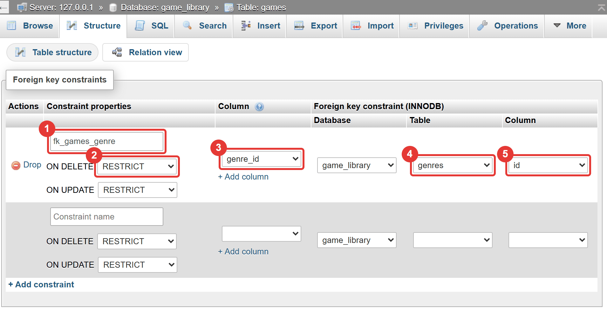
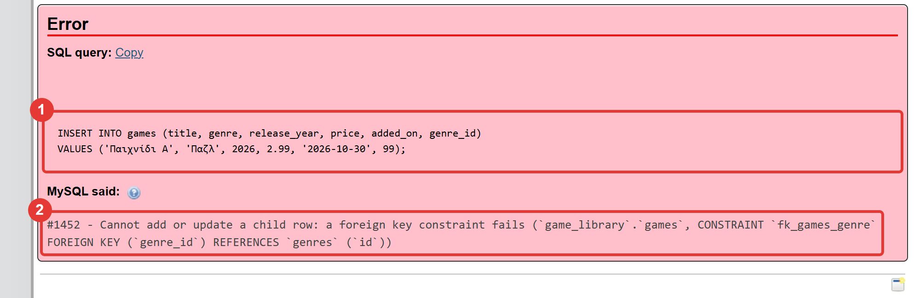
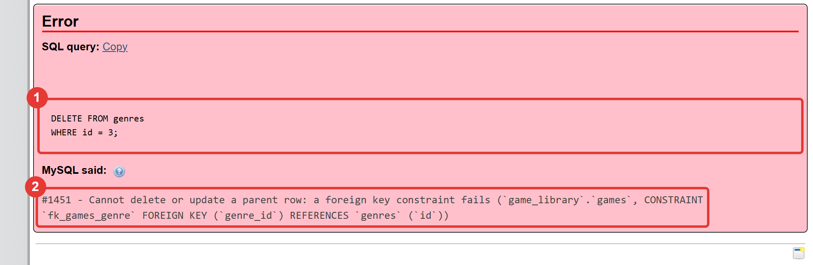

Μάθημα 11: Πολλοί πίνακες: το ξένο κλειδί¶
Βάση δεδομένων: σχεδιασμός με περισσότερους από έναν πίνακες: η σχέση ένα-προς-πολλά και το ξένο κλειδί (FOREIGN KEY)
Διάρκεια: 2 κύκλοι × περίπου 45′ εργασία (2 διδακτικές ώρες)
Φύλλο εργασίας
Αυτή η σελίδα εξηγεί τις έννοιες. Οι ασκήσεις και οι οδηγίες για κάθε κύκλο βρίσκονται στο Φύλλο εργασίας 11. Δούλεψε με τις δύο σελίδες ανοιχτές.
Αρχεία εργαστηρίου¶
| Αρχείο | Κύκλος |
|---|---|
| 01-start-state.sql | πριν αρχίσεις |
| 02-problem.sql | 1 |
| 03-genres.sql | 1 |
| 04-foreign-key.sql | 2 |
Η αποστολή¶
Μέχρι τώρα όλα τα δεδομένα ήταν σε έναν πίνακα. Το είδος κάθε παιχνιδιού γράφεται ως κείμενο σε κάθε γραμμή: πέντε φορές «Αγωνιστικό», πέντε φορές «Παζλ». Δουλεύει, αλλά κρύβει προβλήματα: αν κάποιος γράψει «Αγωνιστικά», η βάση δεν διαμαρτύρεται, και αν θελήσεις να μετονομάσεις ένα είδος, πρέπει να αλλάξεις όλες τις γραμμές του.
Σήμερα το λύνεις όπως το λύνουν οι επαγγελματίες: χωρίζεις τα δεδομένα σε περισσότερους πίνακες που συνδέονται
μεταξύ τους. Είναι το πιο σημαντικό μάθημα σχεδιασμού βάσεων. Τα επόμενα μαθήματα (JOIN, εφαρμογές με πολλούς
πίνακες) στηρίζονται σε αυτό. Σήμερα δεν γράφεις Python: δουλεύεις στο phpMyAdmin.
Στο τέλος θα μπορείς¶
- να εξηγείς τι είναι η επανάληψη δεδομένων και ποια προβλήματα δημιουργεί.
- να χωρίζεις δεδομένα σε δύο πίνακες και να τους συνδέεις με πρωτεύον και ξένο κλειδί.
- να περιγράφεις τη σχέση ένα-προς-πολλά, και να τη ξεχωρίζεις από την ένα-προς-ένα και την πολλά-προς-πολλά.
- να γράφεις
CREATE TABLEκαι να προσθέτεις ξένο κλειδί μεALTER TABLE … ADD FOREIGN KEY. - να εξηγείς τι εμποδίζει το ξένο κλειδί (
#1452,#1451) και γιατί. - να γεμίζεις μια στήλη-ξένο κλειδί από δεδομένα που υπάρχουν ήδη.
- να σχεδιάζεις έναν νέο πίνακα με ξένο κλειδί.
Πριν αρχίσεις¶
- Ξεκίνα τη MySQL και τον Apache από το XAMPP Control Panel.
- Φτιάξε έναν φάκελο
11-foreign-keyμέσα στον φάκελο των μαθημάτων και κατέβασε εκεί τα τέσσερα αρχεία του πίνακα. Κράτησε ακριβώς τα ονόματα. - Φέρε τη βάση στην κατάσταση εκκίνησης: στο phpMyAdmin επίλεξε τη βάση
game_library, άνοιξε την καρτέλα Import, διάλεξε το01-start-state.sqlκαι πάτα Import. - Έλεγξε στην καρτέλα Browse ότι ο
gamesέχει 30 γραμμές και οplatforms5. Ο πίνακαςgenresδεν υπάρχει ακόμη: θα τον φτιάξεις σήμερα.
Το αρχείο εκκίνησης σβήνει τα δεδομένα σου
Το 01-start-state.sql σβήνει τους πίνακες games, platforms, genres, reviews και players και τους
φτιάχνει από την αρχή (τους genres και reviews τους φτιάχνεις εσύ σήμερα). Αν σήμερα χαλάσεις τα δεδομένα, τρέξε
το ξανά και ξεκινάς από την αρχή.
Ο κύκλος εργασίας
Πρόβλεψη → εκτέλεση → σύγκριση → εξήγηση. Σήμερα πρόβλεψε αν η εντολή θα πετύχει ή θα δώσει σφάλμα, και πόσες γραμμές θα αλλάξει.
Κύκλος 1 — Σπάω τον πίνακα σε δύο¶
Σε αυτόν τον κύκλο βλέπεις το πρόβλημα της επανάληψης και φτιάχνεις έναν δεύτερο πίνακα για τα είδη.
1.1 Το πρόβλημα της επανάληψης¶
Όταν το ίδιο κείμενο γράφεται ξανά και ξανά σε πολλές γραμμές, έχεις επανάληψη δεδομένων (redundancy). Φέρνει προβλήματα:
| Πρόβλημα | Παράδειγμα στον games |
|---|---|
| Διαφορετικές γραφές | Κάποιος γράφει «Αγωνιστικά» αντί «Αγωνιστικό». Η βάση το δέχεται, και το GROUP BY φτιάχνει δύο ομάδες. |
| Αλλαγή ονόματος | Για να μετονομάσεις το «Παζλ», πρέπει να αλλάξεις 5 γραμμές. Αν ξεχάσεις μία, το ίδιο είδος έχει δύο ονόματα. |
| Σπατάλη χώρου | Το ίδιο κείμενο αποθηκεύεται ξανά και ξανά. |
| Δεν χωράει πληροφορία | Αν θέλεις να γράψεις μια περιγραφή για το είδος «Παζλ», δεν υπάρχει πού να μπει. |
Ο κανόνας του σχεδιασμού είναι: κάθε πληροφορία γράφεται σε ένα μόνο μέρος.
Στάδιο 1 — Το πρόβλημα¶
Άνοιξε το 02-problem.sql. Συμπλήρωσε τα δύο κενά (____) και τρέξε τις εντολές μία-μία, με τη σειρά. Πρώτα
πρόβλεψε τι θα γίνει: θα δώσει σφάλμα η βάση για το «Αγωνιστικά»;
-- Στάδιο 1 — Το πρόβλημα: το είδος γραμμένο ως κείμενο σε κάθε γραμμή.
--
-- Πριν αρχίσεις: τρέξε το 01-start-state.sql (καρτέλα Import), ώστε ο games να έχει 30 γραμμές.
--
-- Πώς το τρέχεις:
-- 1. Συμπλήρωσε τα κενά (____) σε έναν επεξεργαστή κειμένου.
-- 2. Τρέξε κάθε εντολή ΞΕΧΩΡΙΣΤΑ στην καρτέλα SQL της βάσης game_library, με τη σειρά.
-- 3. ΠΡΩΤΑ πρόβλεψε τι θα γίνει.
-- Ερώτημα 1 (έτοιμο): πόσα παιχνίδια έχει κάθε είδος;
SELECT genre, COUNT(*) AS n
FROM games
GROUP BY genre
ORDER BY genre;
-- Ερώτημα 2: κάποιος γράφει το είδος λίγο διαφορετικά: «Αγωνιστικά» αντί για «Αγωνιστικό». Θα δώσει σφάλμα η βάση;
INSERT INTO games (title, genre, release_year, price, added_on)
VALUES ('Test Racer', '____', 2026, 5.99, '2026-10-30');
-- Ερώτημα 3 (έτοιμο): ξανατρέξε το ερώτημα 1. Πόσες ομάδες έχεις τώρα; Ποια είναι η καινούργια;
SELECT genre, COUNT(*) AS n
FROM games
GROUP BY genre
ORDER BY genre;
-- Ερώτημα 4: μετονόμασε το είδος «Παζλ» σε «Γρίφοι». Πρόσεξε πόσες γραμμές πρέπει να αλλάξουν («N rows affected»)
UPDATE games
SET genre = 'Γρίφοι'
WHERE genre = '____';
-- Ερώτημα 5 (έτοιμο): επανάφερε το όνομα
UPDATE games
SET genre = 'Παζλ'
WHERE genre = 'Γρίφοι';
-- Ερώτημα 6 (έτοιμο): καθάρισε το δοκιμαστικό παιχνίδι
DELETE FROM games
WHERE title = 'Test Racer';
1.2 Η λύση: ένας πίνακας για τα είδη¶
Φτιάχνουμε έναν δεύτερο πίνακα, τον genres, όπου κάθε είδος γράφεται μία φορά και έχει δικό του id. Ο
games δεν γράφει πια το όνομα του είδους, αλλά το id του:
genres games
┌────────────────────┐ ┌──────────────────────────┐
│ id (πρωτεύον) │ 1 ────── N │ id (πρωτεύον) │
│ name │ │ title │
└────────────────────┘ │ release_year, price, … │
│ genre_id (ξένο) ────────┘
└──────────────────────────┘
- Το πρωτεύον κλειδί (
id) το ξέρεις από το Μάθημα 1: ξεχωρίζει κάθε γραμμή του πίνακα. - Το ξένο κλειδί (
genre_id) είναι μια στήλη τουgamesπου περιέχει ταidγραμμών ενός άλλου πίνακα (τουgenres). Έτσι κάθε παιχνίδι «δείχνει» στο είδος του.
Η σχέση είναι ένα-προς-πολλά (1:N): ένα είδος έχει πολλά παιχνίδια, αλλά κάθε παιχνίδι ανήκει σε ένα είδος.
Ο κανόνας: το ξένο κλειδί μπαίνει στον πίνακα της πλευράς «πολλά», εδώ στον games.
1.3 Φτιάχνω τον πίνακα και συμπληρώνω τη στήλη¶
Τα βήματα είναι τέσσερα:
-
Φτιάχνεις τον πίνακα
genres, μεUNIQUEστο όνομα (ένα είδος μία φορά): -
Γεμίζεις τον
genresμε τα είδη (δέκα εγγραφές). - Προσθέτεις στον
gamesτη στήληgenre_id INT NULL. - Συμπληρώνεις τη
genre_idκάθε παιχνιδιού με έναUPDATEανά είδος:UPDATE games SET genre_id = 3 WHERE genre = 'Παζλ';. (Στο Μάθημα 12 θα δεις πώς γίνεται με μία εντολή.)
Μετά το Στάδιο 2 ο games έχει και τη στήλη genre (κείμενο) και τη genre_id. Κρατάμε προς το παρόν την
παλιά genre, ώστε τα προγράμματα των Μαθημάτων 7–10 να συνεχίσουν να διαβάζουν τα παιχνίδια. Η προσθήκη νέου
παιχνιδιού από εκείνα τα προγράμματα θα αποτυγχάνει, γιατί δεν ξέρουν τη genre_id (το ξένο κλειδί του Σταδίου 3 θα την
απορρίπτει με #1452). Θα τα διορθώσουμε και θα σβήσουμε την genre στο Μάθημα 13.
Αν ομαδοποιήσεις με τη genre_id, βλέπεις αριθμούς αντί για ονόματα (π.χ. 2 → 5 παιχνίδια). Για να δεις το όνομα,
πρέπει να κοιτάξεις τον genres. Η εντολή που το κάνει αυτόματα είναι το JOIN, που έρχεται στο Μάθημα 12.
Στάδιο 2 — Ο πίνακας genres¶
Άνοιξε το 03-genres.sql. Συμπλήρωσε τα πέντε κενά και τρέξε τις εντολές μία-μία, με τη σειρά (το ερώτημα 4 είναι
ομάδα εντολών που τρέχει όλη μαζί).
-- Στάδιο 2 — Ο πίνακας genres και η στήλη genre_id.
--
-- Πριν αρχίσεις: ο games πρέπει να έχει 30 γραμμές (01-start-state.sql) και να μην έχει ακόμη στήλη genre_id.
--
-- Πώς το τρέχεις:
-- 1. Συμπλήρωσε τα κενά (____) σε έναν επεξεργαστή κειμένου.
-- 2. Τρέξε κάθε εντολή ΞΕΧΩΡΙΣΤΑ στην καρτέλα SQL της βάσης game_library, με τη σειρά.
-- (Το ερώτημα 4 είναι ομάδα εντολών: τρέξ' το όλο μαζί.)
-- 3. ΠΡΩΤΑ πρόβλεψε τι θα γίνει.
-- Ερώτημα 1: ο νέος πίνακας για τα είδη. Κάθε είδος γράφεται ΜΙΑ φορά και παίρνει δικό του id
CREATE TABLE genres (
id INT NOT NULL ____,
name VARCHAR(30) NOT NULL,
PRIMARY KEY (id),
____ (name)
);
-- Ερώτημα 2 (έτοιμο): τα δέκα είδη, με αυτή τη σειρά (το πρώτο παίρνει id 1, το δεύτερο id 2, κ.ο.κ.)
INSERT INTO genres (name) VALUES
('Arcade'),
('Αγωνιστικό'),
('Παζλ'),
('Ρόλων'),
('Αθλητικό'),
('Πλατφόρμας'),
('Στρατηγικής'),
('Προσομοίωση'),
('Περιπέτεια'),
('Δράσης');
SELECT id, name
FROM genres
ORDER BY id;
-- Ερώτημα 3: στον games, νέα στήλη που θα δείχνει σε ποιο είδος ανήκει το παιχνίδι: το id του είδους
-- (ίδιος τύπος με το id του genres, και προς το παρόν επιτρέπει NULL)
ALTER TABLE games ADD genre_id ____ NULL;
-- Ερώτημα 4 (έτοιμο): συμπλήρωσε τη genre_id, ένα UPDATE για κάθε είδος (στο Μάθημα 12 θα δεις πώς γίνεται με μία εντολή)
UPDATE games SET genre_id = 1 WHERE genre = 'Arcade';
UPDATE games SET genre_id = 2 WHERE genre = 'Αγωνιστικό';
UPDATE games SET genre_id = 3 WHERE genre = 'Παζλ';
UPDATE games SET genre_id = 4 WHERE genre = 'Ρόλων';
UPDATE games SET genre_id = 5 WHERE genre = 'Αθλητικό';
UPDATE games SET genre_id = 6 WHERE genre = 'Πλατφόρμας';
UPDATE games SET genre_id = 7 WHERE genre = 'Στρατηγικής';
UPDATE games SET genre_id = 8 WHERE genre = 'Προσομοίωση';
UPDATE games SET genre_id = 9 WHERE genre = 'Περιπέτεια';
UPDATE games SET genre_id = 10 WHERE genre = 'Δράσης';
-- Ερώτημα 5: έλεγχος. Ποια παιχνίδια ΔΕΝ πήραν genre_id; (πρέπει να είναι 0)
SELECT COUNT(*)
FROM games
WHERE genre_id IS ____;
-- Ερώτημα 6 (έτοιμο): δες την αντιστοιχία: το είδος ως κείμενο και ως id, δίπλα-δίπλα
SELECT id, title, genre, genre_id
FROM games
ORDER BY id
LIMIT 6;
-- Ερώτημα 7: πόσα παιχνίδια έχει κάθε είδος, τώρα με το genre_id; (βλέπεις αριθμούς, όχι ονόματα:
-- τα ονόματα θα τα φέρει το JOIN του Μαθήματος 12)
SELECT genre_id, COUNT(*) AS n
FROM games
GROUP BY ____
ORDER BY n DESC, genre_id;
Συνέχισε στο Φύλλο εργασίας, Κύκλος 1.
Κύκλος 2 — Το ξένο κλειδί¶
Σε αυτόν τον κύκλο δίνεις στη βάση τον κανόνα ότι η genre_id πρέπει να δείχνει σε είδος που υπάρχει, και βλέπεις τι
εμποδίζει.
2.1 Η στήλη μόνη της δεν αρκεί¶
Μέχρι τώρα η genre_id είναι απλώς ένας αριθμός. Τίποτα δεν εμποδίζει κάποιον να γράψει 99, ένα είδος που δεν
υπάρχει: το παιχνίδι θα δείχνει στο «πουθενά». Για να το απαγορεύσεις, δηλώνεις στη βάση ότι η στήλη είναι ξένο
κλειδί:
ALTER TABLE games MODIFY genre_id INT NOT NULL;
ALTER TABLE games
ADD CONSTRAINT fk_games_genre FOREIGN KEY (genre_id) REFERENCES genres (id);
- Η πρώτη εντολή κάνει τη στήλη υποχρεωτική (
NOT NULL): κάθε παιχνίδι πρέπει να έχει είδος. - Η δεύτερη λέει: «η
genre_idτουgamesπαραπέμπει (REFERENCES) στοidτουgenres». Τοfk_games_genreείναι το όνομα του περιορισμού (σύμβαση:fk_πίνακας_πίνακας). Θα το δεις στα μηνύματα σφάλματος. - Ο
gamesλέγεται πίνακας-παιδί (child) και οgenresπίνακας-γονέας (parent). Το παιδί παραπέμπει στον γονέα.
Στο phpMyAdmin, ανοίγοντας τον games → Structure → Relation view, βλέπεις το ξένο κλειδί που δήλωσες:

Διάβασέ το από αριστερά προς τα δεξιά: (1) το όνομα του περιορισμού, (2) τι κάνει η βάση στη διαγραφή του γονέα
(RESTRICT = αρνείται, βλ. 2.3), (3) η στήλη του παιδιού, και (4–5) ο πίνακας και η στήλη του γονέα που
δείχνει. Από εδώ μπορείς και να σβήσεις το ξένο κλειδί (Drop), αλλά μην το κάνεις τώρα.
2.2 Τι εμποδίζει το ξένο κλειδί¶
Η βάση φροντίζει ώστε να μην υπάρχει ορφανό παιδί (παιχνίδι που δείχνει σε είδος που δεν υπάρχει). Λέγεται ακεραιότητα αναφορών (referential integrity):
| Ενέργεια | Αποτέλεσμα |
|---|---|
INSERT ή UPDATE παιχνιδιού με genre_id που δεν υπάρχει στον genres |
σφάλμα #1452 |
INSERT παιχνιδιού χωρίς genre_id (η στήλη είναι NOT NULL, και το XAMPP βάζει 0) |
σφάλμα #1452 (δεν υπάρχει είδος με id 0) |
DELETE είδους που το χρησιμοποιούν παιχνίδια |
σφάλμα #1451 |
UPDATE του id ενός είδους που χρησιμοποιείται |
σφάλμα #1451 |
DROP TABLE genres (ο γονέας) |
σφάλμα #1451 (και το TRUNCATE δίνει #1701) |
DELETE είδους που δεν το χρησιμοποιεί κανείς |
επιτρέπεται |
INSERT νέου είδους, ή μετονομασία είδους (UPDATE genres SET name = …) |
επιτρέπεται |
Στο Μάθημα 6 έμαθες να σβήνεις με DELETE. Με ξένο κλειδί, η βάση δεν σε αφήνει να σβήσεις ένα είδος όσο υπάρχουν
παιχνίδια που το χρησιμοποιούν: πρέπει πρώτα να σβήσεις ή να αλλάξεις αυτά τα παιχνίδια. Είναι μια ακόμη «γραμμή
άμυνας» του Μαθήματος 8, για τη συνέπεια ανάμεσα στους πίνακες.
Έτσι φαίνονται τα δύο σφάλματα στο phpMyAdmin. Πρώτα η εισαγωγή παιχνιδιού με genre_id 99:

Και μετά η διαγραφή του είδους 3, που το χρησιμοποιούν παιχνίδια:

Πρόσεξε ότι και στα δύο μηνύματα αναφέρεται το όνομα του περιορισμού (fk_games_genre) και οι δύο πίνακες. Αυτό
βοηθά να καταλάβεις ποιος κανόνας σε σταμάτησε: γι' αυτό ονομάζουμε τους περιορισμούς.
Το ξένο κλειδί θέλει InnoDB
Το ξένο κλειδί δουλεύει μόνο σε πίνακες InnoDB, που είναι η προεπιλογή του XAMPP (και οι πίνακές σου). Σε πίνακα
MyISAM η MySQL αγνοεί σιωπηλά το FOREIGN KEY, χωρίς σφάλμα.
2.3 Υποχρεωτικό ή προαιρετικό; Και τι γίνεται στη διαγραφή;¶
- Αν η στήλη του ξένου κλειδιού επιτρέπει
NULL, η σχέση είναι προαιρετική: το παιδί μπορεί να μην ανήκει σε κανέναν γονέα. ΜεNOT NULLείναι υποχρεωτική (εδώ: κάθε παιχνίδι πρέπει να έχει είδος). - Η προεπιλεγμένη συμπεριφορά στη διαγραφή του γονέα είναι η άρνηση (
RESTRICT), αυτή που είδες. Υπάρχουν και άλλες επιλογές, όπωςON DELETE SET NULLκαιON DELETE CASCADE.
Προσοχή με το CASCADE
Με ON DELETE CASCADE, ένα DELETE στον γονέα σβήνει αυτόματα και όλα τα παιδιά, χωρίς ερώτηση. Θα έσβηνες ένα
είδος και θα χάνονταν ταυτόχρονα όλα τα παιχνίδια του. Στο μάθημα χρησιμοποιούμε πάντα την προεπιλογή, που
προστατεύει τα δεδομένα.
2.4 Μία αλήθεια, όχι δύο¶
Μετονόμασε το είδος 3 στον genres (UPDATE genres SET name = 'Γρίφοι' WHERE id = 3): αλλάζει μία γραμμή, όσα
παιχνίδια κι αν έχει το είδος. Όλα τα παιχνίδια με genre_id = 3 «ακολουθούν» αμέσως το νέο όνομα. Όμως η παλιά στήλη
genre (κείμενο) δεν άλλαξε: ακόμη γράφει «Παζλ». Τώρα η πληροφορία «τι είδος είναι το παιχνίδι» υπάρχει δύο
φορές, και οι δύο διαφωνούν. Αυτό ακριβώς ήθελε να αποφύγει ο σχεδιασμός. Γι' αυτό η στήλη genre θα σβηστεί (στο
Μάθημα 13): η μόνη αλήθεια είναι το genre_id.
Στάδιο 3 — Το ξένο κλειδί¶
Άνοιξε το 04-foreign-key.sql. Δουλεύει μετά το Στάδιο 2. Συμπλήρωσε τα τέσσερα κενά και τρέξε τις εντολές
μία-μία, με τη σειρά. Πρόβλεψε πρώτα αν θα πετύχουν ή θα δώσουν σφάλμα, και ποιο.
-- Στάδιο 3 — Το ξένο κλειδί (FOREIGN KEY).
--
-- Πριν αρχίσεις: έχεις κάνει το Στάδιο 2 (ο πίνακας genres υπάρχει και όλα τα παιχνίδια έχουν genre_id).
--
-- Πώς το τρέχεις:
-- 1. Συμπλήρωσε τα κενά (____) σε έναν επεξεργαστή κειμένου.
-- 2. Τρέξε κάθε εντολή ΞΕΧΩΡΙΣΤΑ στην καρτέλα SQL της βάσης game_library, με τη σειρά.
-- 3. ΠΡΩΤΑ πρόβλεψε αν η εντολή θα πετύχει ή θα δώσει σφάλμα, και ποιο (#αριθμός).
-- 4. Οι εντολές με σημείωση «ΘΑ ΔΩΣΕΙ ΣΦΑΛΜΑ» το δίνουν επίτηδες.
-- Ερώτημα 1 (έτοιμο): ΠΡΙΝ το ξένο κλειδί: ένα genre_id που δεν υπάρχει (99) γίνεται δεκτό. Τρέξε και τις τρεις εντολές
INSERT INTO games (title, genre, release_year, price, added_on, genre_id)
VALUES ('Παιχνίδι Α', 'Παζλ', 2026, 2.99, '2026-10-30', 99);
SELECT id, title, genre_id
FROM games
WHERE title = 'Παιχνίδι Α';
DELETE FROM games
WHERE title = 'Παιχνίδι Α';
-- Ερώτημα 2: κάθε παιχνίδι ΠΡΕΠΕΙ να έχει είδος: η στήλη δεν θα επιτρέπει πια NULL
ALTER TABLE games MODIFY genre_id INT NOT ____;
-- Ερώτημα 3: το ξένο κλειδί. Η genre_id του games δείχνει στο id του genres
ALTER TABLE games
ADD CONSTRAINT fk_games_genre FOREIGN KEY (genre_id) ____ genres (id);
-- Ερώτημα 4 (έτοιμο): ΘΑ ΔΩΣΕΙ ΣΦΑΛΜΑ. Το ίδιο παιχνίδι με genre_id 99, που δεν υπάρχει στον genres
INSERT INTO games (title, genre, release_year, price, added_on, genre_id)
VALUES ('Παιχνίδι Α', 'Παζλ', 2026, 2.99, '2026-10-30', 99);
-- Ερώτημα 5: η ΣΩΣΤΗ εισαγωγή, με είδος που υπάρχει (το 3 είναι το «Παζλ»)
INSERT INTO games (title, genre, release_year, price, added_on, genre_id)
VALUES ('Παιχνίδι Β', 'Παζλ', 2026, 2.99, '2026-10-30', ____);
-- Ερώτημα 6 (έτοιμο): ΘΑ ΔΩΣΕΙ ΣΦΑΛΜΑ. Προσπάθεια να σβήσεις ένα είδος που το χρησιμοποιούν παιχνίδια
DELETE FROM genres
WHERE id = 3;
-- Ερώτημα 7: ένα είδος που δεν το χρησιμοποιεί κανένα παιχνίδι σβήνεται κανονικά. Πρόσθεσε ένα και σβήσ' το
INSERT INTO genres (name) VALUES ('Δοκιμή');
DELETE FROM genres
WHERE name = '____';
-- Ερώτημα 8 (έτοιμο): μετονόμασε το είδος 3: ΜΙΑ γραμμή αλλάζει, όσα παιχνίδια κι αν έχει
UPDATE genres
SET name = 'Γρίφοι'
WHERE id = 3;
-- Ερώτημα 9 (έτοιμο): η σχέση με το genre_id δεν επηρεάστηκε, αλλά το κείμενο genre των παιχνιδιών ΔΕΝ άλλαξε.
-- Κοίτα τι γράφει κάθε στήλη
SELECT id, title, genre, genre_id
FROM games
WHERE genre_id = 3
ORDER BY id
LIMIT 3;
-- Ερώτημα 10 (έτοιμο): επανάφερε το όνομα και καθάρισε το δοκιμαστικό παιχνίδι
UPDATE genres
SET name = 'Παζλ'
WHERE id = 3;
DELETE FROM games
WHERE title = 'Παιχνίδι Β';
2.5 Οι τύποι σχέσεων¶
| Σχέση | Τι σημαίνει | Παράδειγμα | Πώς υλοποιείται |
|---|---|---|---|
| ένα-προς-πολλά (1:N) | ένα στοιχείο της μίας πλευράς, πολλά της άλλης | ένα είδος, πολλά παιχνίδια | ξένο κλειδί στην πλευρά «πολλά» |
| ένα-προς-ένα (1:1) | ένα προς ένα | ένας χρήστης, ένα προφίλ | ξένο κλειδί με UNIQUE |
| πολλά-προς-πολλά (N:N) | πολλά προς πολλά | παιχνίδια και πλατφόρμες | τρίτος πίνακας (Μάθημα 14) |
Τα παιχνίδια και οι πλατφόρμες είναι πολλά-προς-πολλά: ένα παιχνίδι βγαίνει σε πολλές πλατφόρμες, και μια πλατφόρμα έχει πολλά παιχνίδια. Με μία στήλη-ξένο κλειδί δεν γίνεται: θα το λύσεις στο Μάθημα 14.
2.6 Σχεδιάζω έναν νέο πίνακα¶
Για να προσθέσεις νέο είδος πληροφορίας, ρωτάς τρία πράγματα:
- Ποιο είναι το «ένα» και ποιο το «πολλά»; (Μια κριτική ανήκει σε ένα παιχνίδι. Ένα παιχνίδι έχει πολλές κριτικές.)
- Το ξένο κλειδί μπαίνει στον πίνακα της πλευράς «πολλά», και παραπέμπει στο
idτης πλευράς «ένα». - Είναι η σχέση υποχρεωτική (
NOT NULL); Τι όνομα παίρνει ο περιορισμός;
Το γενικό σχήμα:
CREATE TABLE child (
id INT NOT NULL AUTO_INCREMENT,
parent_id INT NOT NULL,
-- … οι υπόλοιπες στήλες …
PRIMARY KEY (id),
CONSTRAINT fk_child_parent FOREIGN KEY (parent_id) REFERENCES parent (id)
);
Στο φύλλο εργασίας θα το εφαρμόσεις και θα φτιάξεις έναν πίνακα reviews (κριτικές) που παραπέμπει στον games.
Συνέχισε στο Φύλλο εργασίας, Κύκλος 2.
Έλεγχος πριν ολοκληρώσεις¶
- □ Στο Στάδιο 1 είδες ότι το «Αγωνιστικά» έγινε δεκτό και έφτιαξε νέα ομάδα.
- □ Στο Στάδιο 2 ο
genresέχει 10 είδη και κανένα παιχνίδι δεν έμεινε χωρίςgenre_id. - □ Στο Στάδιο 3 είδες τα σφάλματα
#1452και#1451και ξέρεις ποια ενέργεια τα προκάλεσε. - □ Μπορείς να εξηγήσεις γιατί η στήλη
genreθα σβηστεί αργότερα. - □ Ο πίνακας
reviewsδεν δέχεται κριτική για παιχνίδι που δεν υπάρχει. - □ Όταν τελείωσες, σταμάτησες τον Apache και τη MySQL.
Για να θυμάσαι¶
- Κάθε πληροφορία γράφεται σε ένα μόνο μέρος. Η επανάληψη δεδομένων φέρνει ασυνέπειες και δύσκολες αλλαγές.
- Σπάς τα δεδομένα σε πίνακες και τους συνδέεις: πρωτεύον κλειδί (
id) στον πίνακα-γονέα, ξένο κλειδί (genre_id) στον πίνακα-παιδί. - Ένα-προς-πολλά: το ξένο κλειδί μπαίνει στην πλευρά «πολλά».
ALTER TABLE … ADD CONSTRAINT όνομα FOREIGN KEY (στήλη) REFERENCES γονέας (id).- Το ξένο κλειδί εμποδίζει: παιδί με γονέα που δεν υπάρχει (
#1452), διαγραφή γονέα που έχει παιδιά (#1451). - Δουλεύει μόνο σε InnoDB. Προσοχή με το
ON DELETE CASCADE: σβήνει και τα παιδιά. - Δεν αρκεί να υπάρχει η στήλη
genre_id: χωρίς δήλωσηFOREIGN KEY, η βάση δεν ελέγχει τίποτα. - Οι πολλά-προς-πολλά σχέσεις θέλουν τρίτο πίνακα (Μάθημα 14).
Λεξιλόγιο¶
επανάληψη δεδομένων (redundancy), πρωτεύον κλειδί (primary key), ξένο κλειδί (foreign key), ένα-προς-πολλά,
πίνακας-γονέας (parent), πίνακας-παιδί (child), ακεραιότητα αναφορών, περιορισμός (constraint),
REFERENCES, CASCADE, InnoDB.
Δική σου εκδοχή¶
Αν τελειώσεις νωρίτερα, δούλεψε με μία αλλαγή τη φορά και δοκίμαζε μετά από κάθε αλλαγή:
- Πρόσθεσε στον
genresμια στήληdescription VARCHAR(200) NULL(ALTER TABLE) και γράψε μια περιγραφή για το «Παζλ». Αυτή είναι η πληροφορία που δεν είχε πού να μπει στον αρχικό πίνακα. - Στο phpMyAdmin, άνοιξε τον
games→ Structure → Relation view και δες τη σχέση που δηλώσες. Δοκίμασε και την καρτέλα Designer της βάσης. - Πρόκληση 1: γιατί το ξένο κλειδί είναι το
genre_id(αριθμός) και όχι τοname(κείμενο); Σκέψου τι θα γινόταν στη μετονομασία ενός είδους. - Πρόκληση 2: ποια εντολή θα έδινε σφάλμα αν στον
genresυπήρχε ήδη είδος με όνομα «Παζλ»; (ΔοκίμασεINSERT INTO genres (name) VALUES ('ΠΑΖΛ'). Τι σου λέει για τοUNIQUE;)